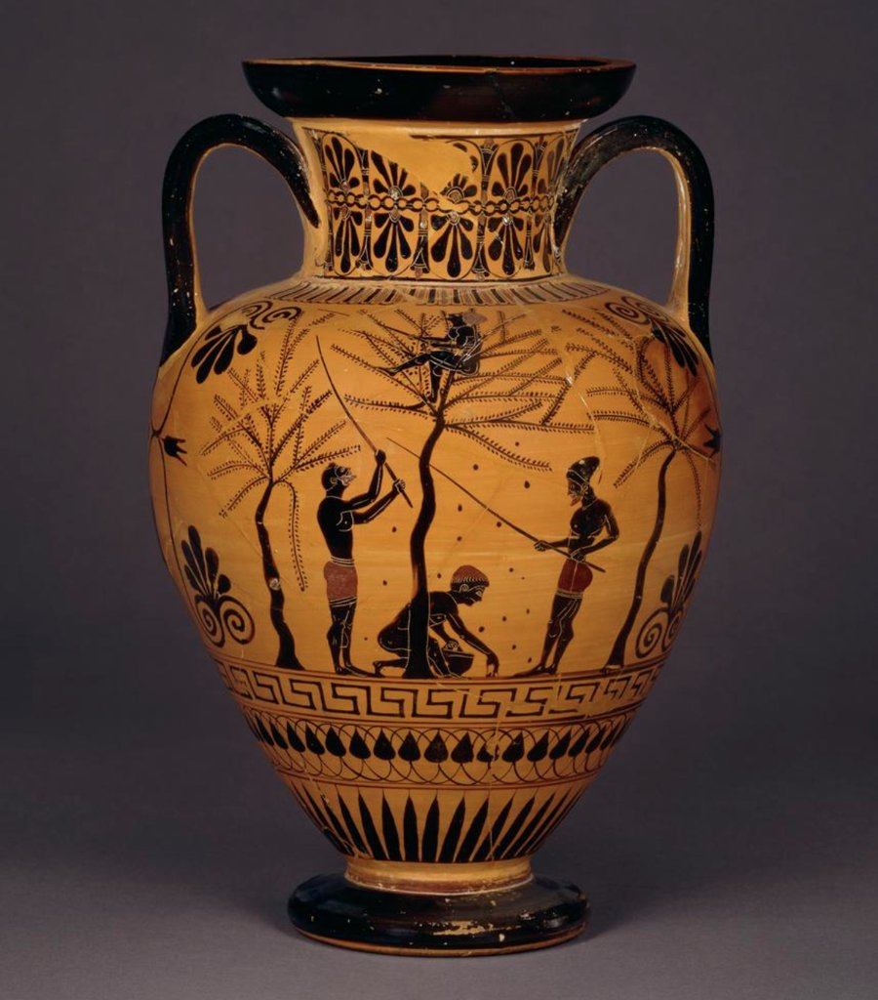
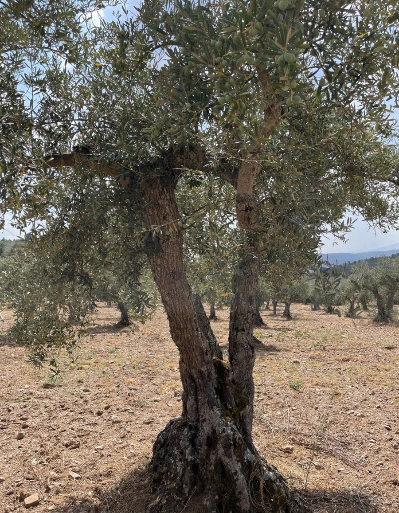
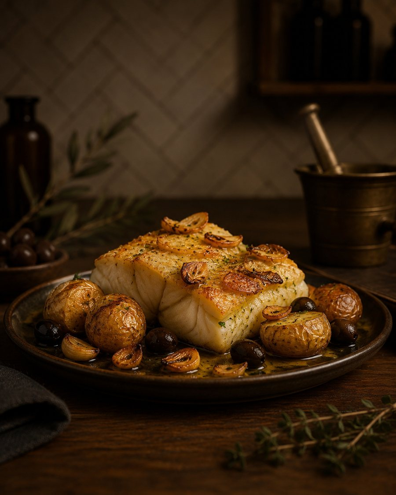

“A força da terra, esculpida pelo vento.”
Zirbo é o vento gélido
e cortante que sopra
sobre a Terra Fria.
Nas terras altas de Trás-os-Montes, onde o inverno esculpe a paisagem com rigor e silêncio, nasce o Zirbo — o vento frio e cortante que desafia as oliveiras. É sob este clima da Terra Fria que a azeitona amadurece lentamente, concentrando aromas e caráter.
Este azeite virgem extra nasce do encontro entre a dureza da terra e o ouro líquido do lagar. Um tributo à persistência transmontana, enlatado na sua forma mais pura.
Zirbo — a força da terra, esculpida pelo vento.

01Seis mil anos de civilização — do Neolítico às mesas de hoje.
Ler mais → 02
02
Dos primeiros sinais humanos aos castros e à romanização.
Ler mais →
03Como a oliveira encontrou o seu lugar na Terra Fria.
Ler mais → 04
04
Norte e Sul: duas formas diferentes de fazer azeite no mesmo país.
Ler mais → 05
05
Perfil sensorial, ficha técnica e a lata que protege o azeite.
Ler mais → 06
06
O que a ciência diz sobre o azeite virgem extra.
Ler mais →
07Quatro clássicos portugueses onde o azeite é protagonista.
Ler mais → 08
08
O azeite Zirbo, e os primeiros acessórios da coleção.
Ver loja →O primeiro lote Zirbo é limitado e numerado. Depois de esgotado, só a próxima colheita trará mais.
Comprar agora →Envio após confirmação da ficha técnica final do lote.